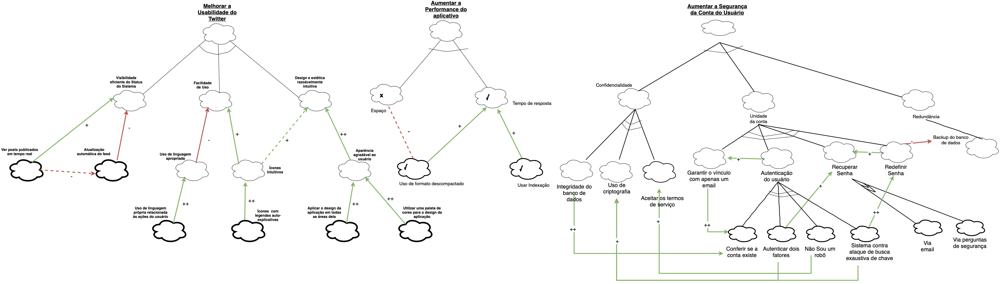
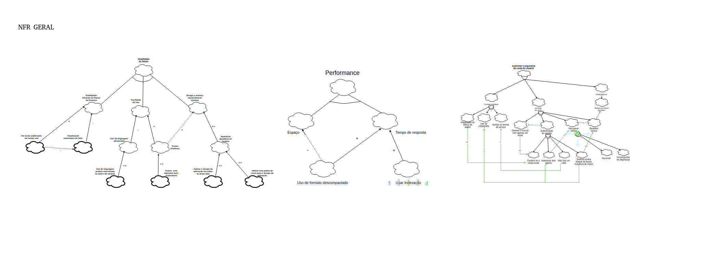
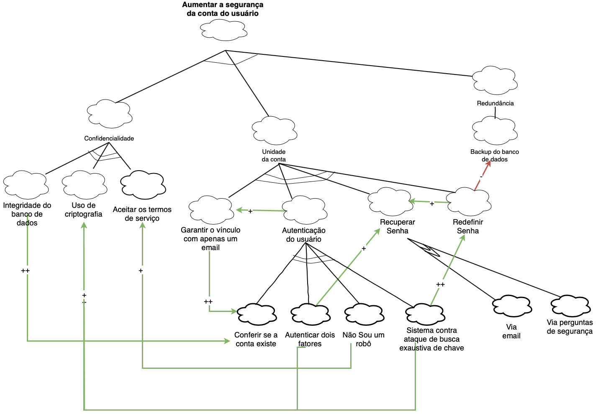
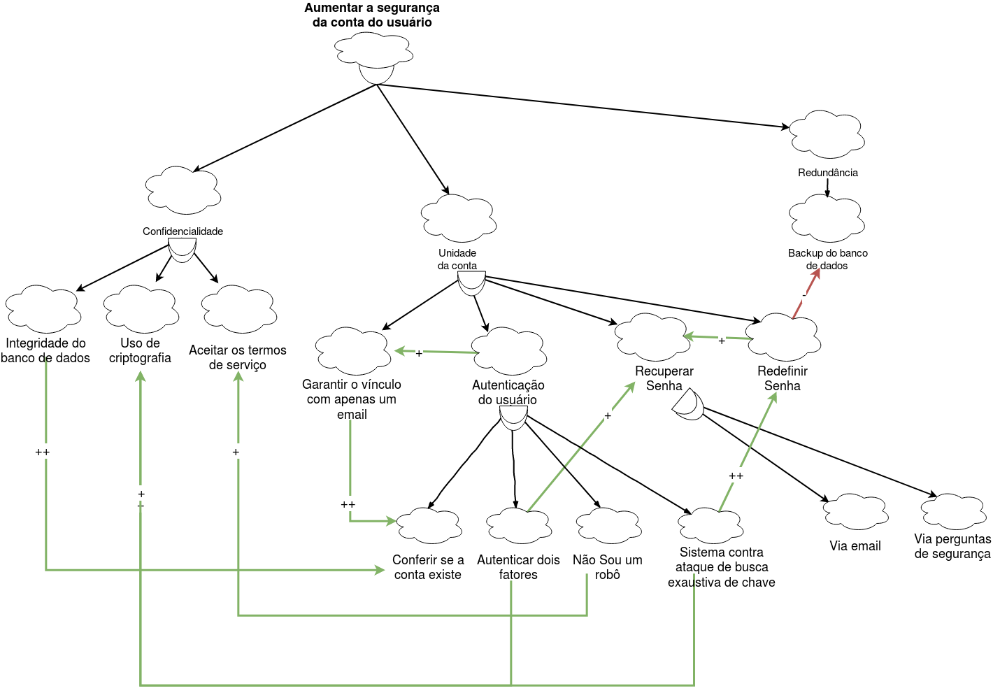
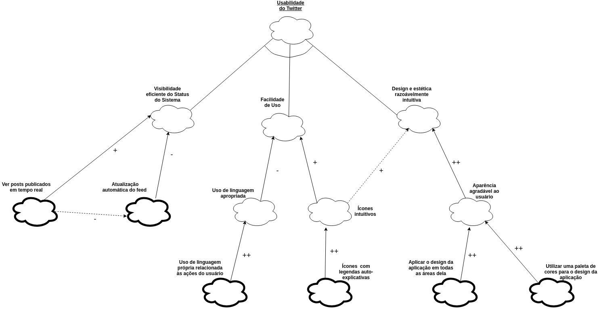

NFR Framework
Diagramas desenvolvidos:
- NFR do Twitter;
- Diagrama de Segurança;
- Diagrama de Usabilidade;
- Diagrama de Desempenho ou de Performance;
NFR do Twitter
Autor(es): Todo o grupo
- Junção dos diagramas de segurança, de usabilidade e de desempenho
Versão 1.0
 Clique na imagem para vê-la separadamente.
{kind=link}
Versão 0.1
 Clique na imagem para vê-la separadamente.
{kind=link}
Diagrama de Segurança
Autor(es): Erick e Fernando
- Confidencialidade:
- Criptografia;
- Integridade do banco de dados;
- Termo de serviço.
- Unidade da conta - Somente quem tem a senha consegue acessar a conta:
- Garantir o vínculo com apenas um email;
- Autenticação:
- Conferir se a conta existe:
- O nome de usuário e a senha fornecidos não correspondem às informações em nossos registros. Verifique-as e tente novamente.
- Autenticação de dois fatores:
- Email;
- SMS;
- Google Authentication.
- Não sou um robô;
- Sistema contra ataque de busca exaustiva de chave.
- Recuperação de senha:
- Via email;
- Via pergunta de segurança.
- Redefinir senha;
- Redundância:
- Backup do banco de dados.
Versão 1.0
 Clique na imagem para vê-la separadamente.
{kind=link}
Versão 0.1
 Clique na imagem para vê-la separadamente.
{kind=link}
Diagrama de Usabilidade
Autor(es): Aline e Lorrany
- Visabilidade eficiente do Status do Sistema:
- Ver posts publicados em tempo real;
- Atualização automática do feed.
- Facilidade de Uso:
- Uso de linguagem apropriada:
- Uso de linguagem própria relacionada às ações do usuário.
- Ícones intuitivos:
- Ícones com legendas auto-explicativas.
- Design e estética razoávelmente intuitiva:
- Aparência agradável ao usuário:
- Aplicar o design da aplicação em todas as áreas delas;
- Utilizar uma paleta de cores para o design da aplicação.
Versão 1.0
 Clique na imagem para vê-la separadamente.
Clique na imagem para vê-la separadamente.
Versão 0.1
 Clique na imagem para vê-la separadamente.
{kind=link}
Diagrama de Desempenho ou de Performance
Autor(es): Bruno e Eugênio
- Espaço:
- Datacenters.
- Tempo de resposta:
- Taxa de transferência.
- Usar formato descompactado;
- Usar indexação.
Versão 1.0
{kind=link}
Clique na imagem para vê-la separadamente.
Versão 0.1
{kind=link}
Clique na imagem para vê-la separadamente.
Versionamento de edições desta página
| Data | Autor | Descrição | Versão |
|---|---|---|---|
| 20/10/2019 | Fernando Aguilar | Criação da página e ajuste para a adição do diagrama de segurança. | 0.1 |
| 21/10/2019 | Bruno Duarte | Ajuste da página para a adição do diagrama de performance. | 0.2 |
| 21/10/2019 | Eugênio Sales | Ajuste da página para a adição do diagrama de performance. | 0.3 |
| 21/10/2019 | Aline Laureano e Lorrany Azevedo | Ajuste da página para a adição do diagrama de usabilidade. | 0.4 |
| 21/10/2019 | Lorrany Azevedo | Ajuste da página para a adição do diagrama Geral. | 0.5 |
| 22/10/2019 | Aline Laureano | Padronização do layout da página e adição dos links internos para os diagramas. | 0.6 |
| 22/10/2019 | Erick Giffoni | Adição dos autores de cada diagrama | 0.6.1 |
| 24/11/2019 | Erick Giffoni | Adição dos diagramas e do NFR refatoradosFormatação da página | 1.0 |